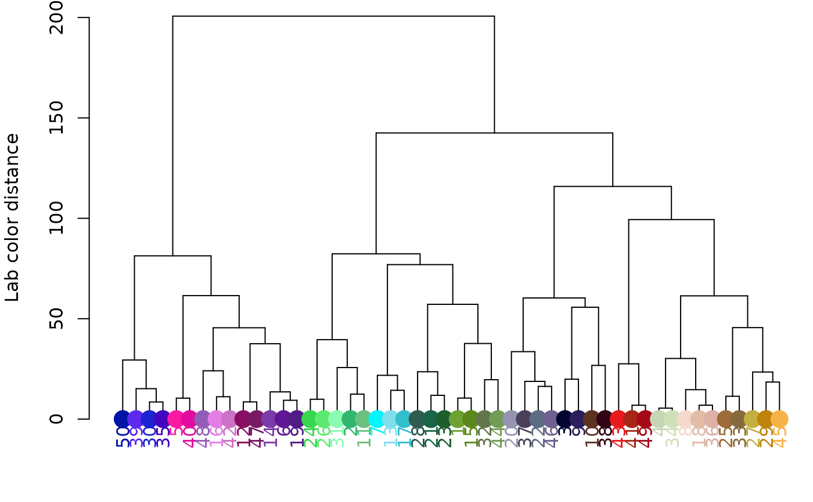
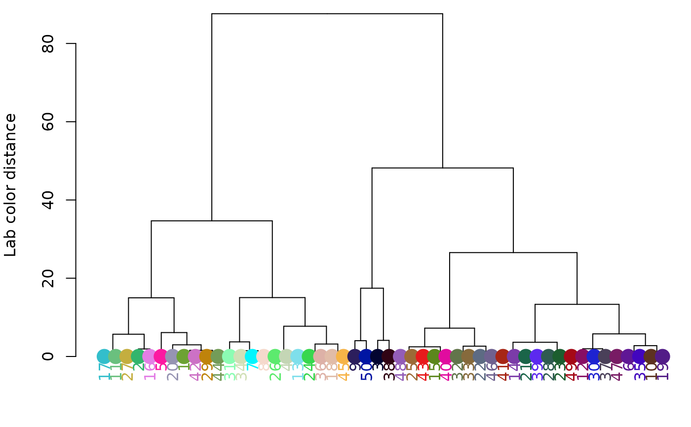
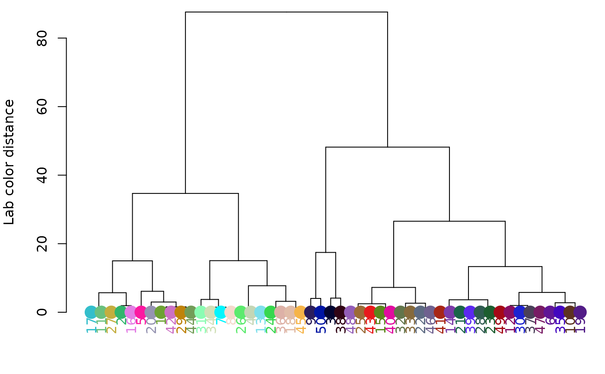
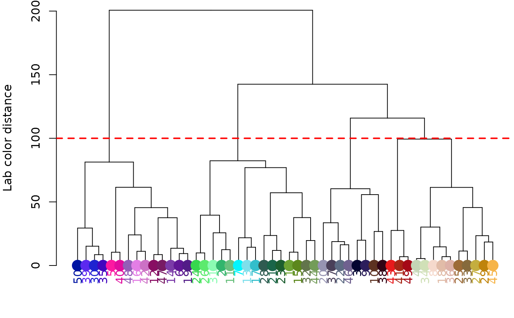
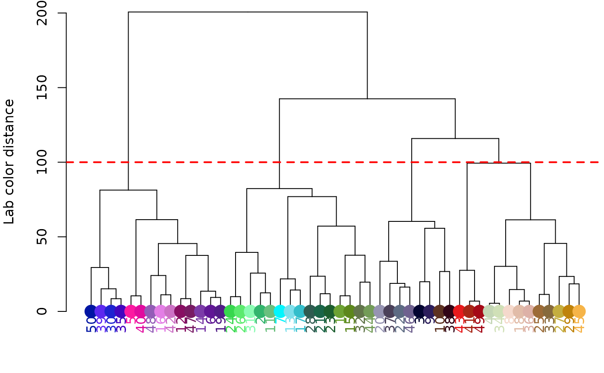

A wrapper for stats::hclust for clustering colors by similarity.
This works by converting a matrix of RGB centers to a given color space
(CIE Lab is the default), generating a distance matrix for those colors
in that color space (or a subset of channels of that color space),
clustering them, and plotting them with labels and colors. If either a
cutoff or a final number of colors is provided and return_list = TRUE,
function also returns a list of which color centers to combine.
Usage
hclust_color(
rgb_centers,
dist_method = "euclidean",
hclust_method = "complete",
channels = 1:3,
color_space = "Lab",
ref_white = "D65",
cutoff = NULL,
n_final = NULL,
return_list = TRUE,
plotting = TRUE
)Arguments
- rgb_centers
A matrix of RGB centers. Rows are centers and columns are R, G, and B values.
- dist_method
Method passed to stats::dist. One of "euclidean", "maximum", "manhattan", "canberra", "binary" or "minkowski".
- hclust_method
Method passed to stats::hclust. One of "ward.D", "ward.D2", "single", "complete", "average" (= UPGMA), "mcquitty" (= WPGMA), "median" (= WPGMC) or "centroid" (= UPGMC).
- channels
Numeric: which color channels to use for clustering. Probably some combination of 1, 2, and 3, e.g., to consider only luminance and blue-yellow (b-channel) distance in CIE Lab space,
channels = c(1, 3(L and b).- color_space
Color space in which to do the clustering.
- ref_white
Reference white for converting to different color spaces. D65 (the default) corresponds to standard daylight. See grDevices::convertColor.
- cutoff
Either
NULLor a numeric cutoff passed to stats::cutree. Distance below which to combine clusters, i.e. height at which the tree should be cut.- n_final
Numeric. Desired number of groups. Overrides
cutoffif both are provided.- return_list
Logical. Return a list of new group assignments from the
cutofforn_finalvalues?- plotting
Logical. Plot a colored dendrogram?
Value
A list of group assignments (i.e. which centers belong to which
groups), if return_list = TRUE.
Details
This is mostly useful in deciding where and in which color space
to place a cutoff for a recolorize object, since it is very fast. It
is called by recluster when combining layers by similarity.
Examples
# 50 random RGB colors
rgb_random <- matrix(runif(150), nrow = 50, ncol = 3)
# default clustering (Lab space):
hclust_color(rgb_random, return_list = FALSE)

# clustering in RGB space (note change in Y-axis scale):
hclust_color(rgb_random, color_space = "sRGB", return_list = FALSE)
 # clustering using only luminance:
hclust_color(rgb_random, channels = 1, return_list = FALSE)

# or only red-green ('a' channel):
hclust_color(rgb_random, channels = 2, return_list = FALSE)
# clustering using only luminance:
hclust_color(rgb_random, channels = 1, return_list = FALSE)

# or only red-green ('a' channel):
hclust_color(rgb_random, channels = 2, return_list = FALSE)
 # or only blue-yellow ('b' channel(:
hclust_color(rgb_random, channels = 3, return_list = FALSE)
# or only blue-yellow ('b' channel(:
hclust_color(rgb_random, channels = 3, return_list = FALSE)
 # use a cutoff to get groups:
groups <- hclust_color(rgb_random, cutoff = 100)

print(groups)
#> [[1]]
#> [1] 1 2 7 11 13 15 17 21 23 24 26 28 31 32 44
#>
#> [[2]]
#> [1] 3 9 10 20 22 37 38 46
#>
#> [[3]]
#> [1] 4 8 18 25 27 29 33 34 36 41 43 45 49
#>
#> [[4]]
#> [1] 5 6 12 14 16 19 30 35 39 40 42 47 48 50
#>
# use a cutoff to get groups:
groups <- hclust_color(rgb_random, cutoff = 100)

print(groups)
#> [[1]]
#> [1] 1 2 7 11 13 15 17 21 23 24 26 28 31 32 44
#>
#> [[2]]
#> [1] 3 9 10 20 22 37 38 46
#>
#> [[3]]
#> [1] 4 8 18 25 27 29 33 34 36 41 43 45 49
#>
#> [[4]]
#> [1] 5 6 12 14 16 19 30 35 39 40 42 47 48 50
#>